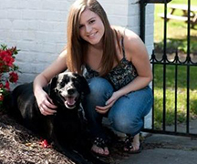
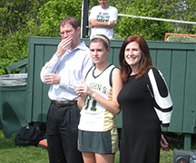
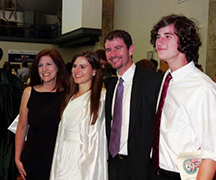
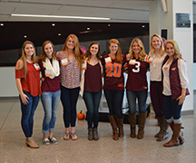
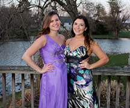

Secondary Education
I graduated from Saint John's Catholic Prep in the spring of 2012 with Honors Distinction. While there I took four of the eight AP courses offered by my school, volunteered almost every weekend at school fundraisers, and became a member of the National Honor Society. I played lacrosse, basketball, and cheerled for my school and I am a proud alum.




Higher Education
I will graduate from Virginia Tech in the spring of 2016. I have enjoyed my time in college being active in the VT Public Relations Student Society of America and worked several on campus jobs to support my community. Virginia Tech has taught be how to be more individualist and with hard work I can achieve my goals


